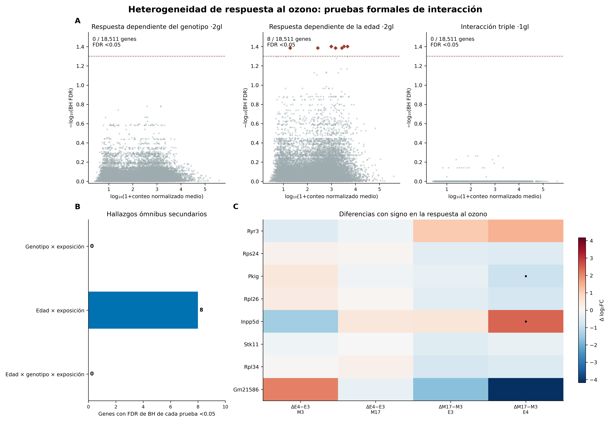
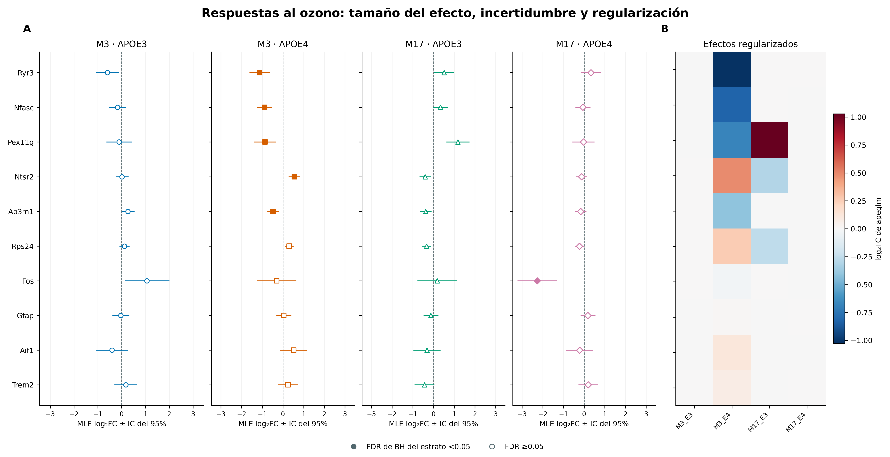
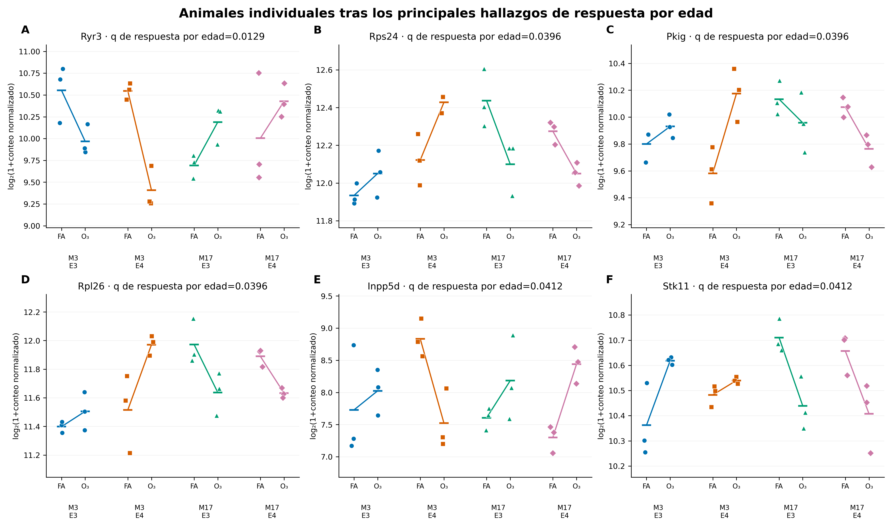
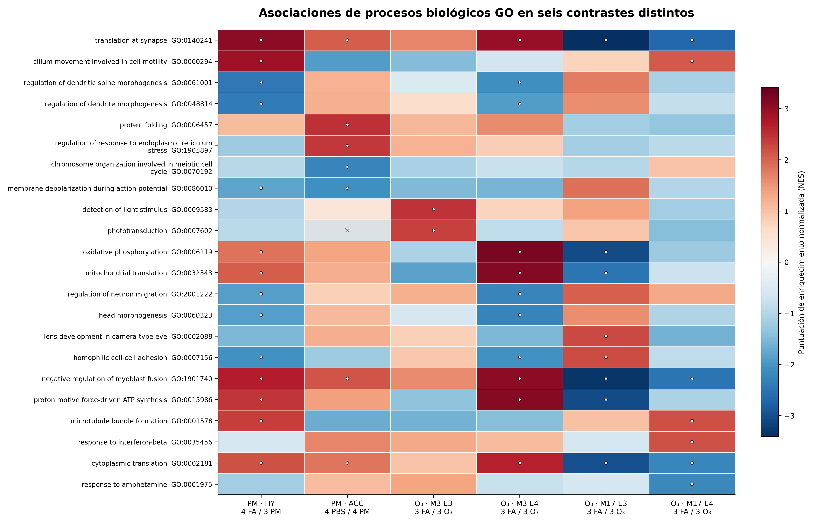
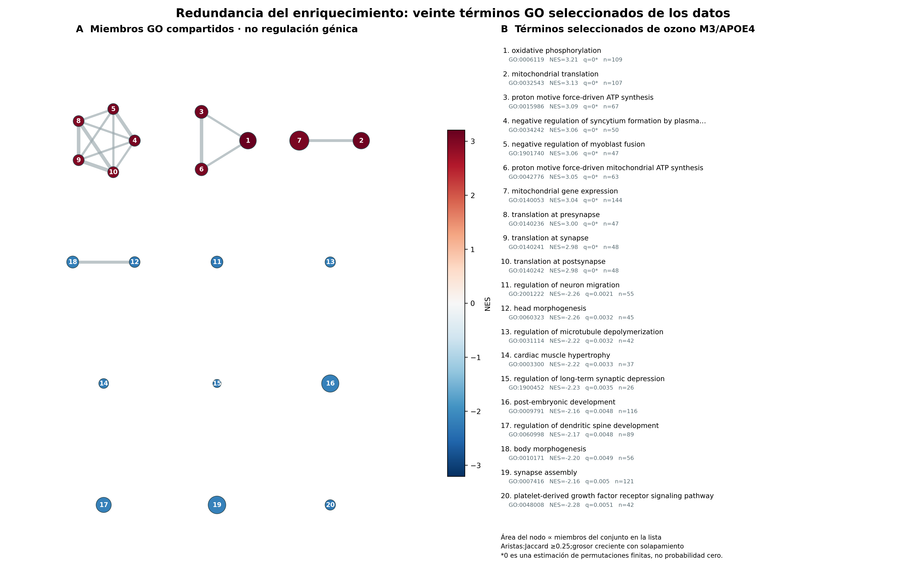

| Prueba | gl | Pruebas válidas | BH < 0.05 por familia | BH < 0.05 entre tres familias |
|---|---|---|---|---|
| Respuesta dependiente del genotipo | 2 | 18511 | 0 | 0 |
| Respuesta dependiente de la edad | 2 | 18511 | 8 | 1 |
| Edad × genotipo × exposición | 1 | 18511 | 0 | 0 |
Heterogeneidad de la respuesta y organización funcional
Análisis secundarios con pruebas formales de interacción y paneles moleculares
Pregunta científica y alcance
Los contrastes principales de ozono cuantifican diferencias asociadas a la exposición dentro de cada estrato de edad/APOE. Un resultado significativo en un estrato y no significativo en otro no demuestra que las respuestas difieran. Este análisis secundario prueba directamente si el efecto de O₃ frente a aire filtrado depende de la edad o el genotipo. Utiliza los mismos 24 animales y 18,537 genes retenidos; no incorpora observaciones biológicas independientes. Son análisis exploratorios nuevos del depósito de Nakamya et al., distintos de la reproducción de los resultados originales. Nakamya et al. (2025)
Los efectos de tejido completo pueden reflejar regulación de expresión, composición celular o material vascular. Un coeficiente de interacción o una etiqueta GO no identifica qué tipo celular responde. La referencia MERFISH medida aporta contexto anatómico al hipotálamo y PM2.5; no valida los efectos de ozono en hipocampo.
Metodología: comparar directamente las respuestas
El modelo binomial negativo es ~age * genotype * exposure, con un diseño de rango ocho. Se conservan los factores de normalización por longitud efectiva y las dispersiones del modelo principal con todos los animales. Las pruebas anidadas de razón de verosimilitudes eliminan las interacciones de exposición correspondientes y mantienen los efectos principales pertinentes. Love et al. (2014)
| Pregunta | Modelo reducido | Grados de libertad |
|---|---|---|
| ¿Depende la respuesta del genotipo entre edades? | ~age * genotype + exposure + age:exposure |
2 |
| ¿Depende la respuesta de la edad entre genotipos? | ~age * genotype + exposure + genotype:exposure |
2 |
| ¿Existe un término adicional edad × genotipo × exposición? | ~(age + genotype + exposure)^2 |
1 |
Cada prueba tiene su propia familia de BH entre genes. Las columnas suplementarias aplican BH conjuntamente a las tres familias LRT. Se mantiene el filtrado de Cook y se desactiva el filtrado independiente adaptativo. Los ajustes sin convergencia no aportan valores p a la corrección. Todos los ajustes completos y reducidos convergieron; 18,511 genes tienen valores p LRT válidos.
Los contrastes Wald condicionales estiman diferencias entre respuestas de exposición en escala log₂, mediante combinaciones de coeficientes que incorporan su covarianza. Se omiten las estimaciones de genes con conteos cero en todas las muestras de un estrato requerido de seis animales. Los intervalos son puntuales: MLE ± 1.95996 EE; no son intervalos simultáneos ni incertidumbre celular.
Resultados: heterogeneidad asociada con la edad
La prueba de respuesta dependiente de la edad identifica ocho genes con el umbral de BH de su propia familia: Ryr3, Rps24, Pkig, Rpl26, Inpp5d, Stk11, Rpl34 y Gm21586. Solo Ryr3 (q conjunta ≈ 0.0386) permanece por debajo de 0.05 al ajustar conjuntamente las tres familias LRT. Las pruebas globales dependiente del genotipo y de interacción triple no identifican genes con sus respectivos umbrales. Con tres animales por grupo, estos resultados nulos no establecen equivalencia entre respuestas.
| Gen | Conteo normalizado medio | Estadístico de prueba | p nominal | FDR de BH |
|---|---|---|---|---|
| Ryr3 | 1.15e+03 | 28.4 | 6.96e-07 | 0.013 |
| Rps24 | 4.66e+03 | 24.7 | 4.32e-06 | 0.040 |
| Pkig | 985 | 23.9 | 6.62e-06 | 0.040 |
| Rpl26 | 3.35e+03 | 23.3 | 8.55e-06 | 0.040 |
| Inpp5d | 271 | 22.7 | 1.18e-05 | 0.041 |
| Stk11 | 1.48e+03 | 22.3 | 1.45e-05 | 0.041 |
| Rpl34 | 2.75e+03 | 22 | 1.71e-05 | 0.041 |
| Gm21586 | 18.4 | 21.9 | 1.78e-05 | 0.041 |


Las familias Wald condicionales identifican 6 y 4 diferencias de respuesta por genotipo a M3 y M17, y 2 y 4 diferencias por edad en APOE3 y APOE4. El contraste triple con signo no identifica ninguna. Sus hipótesis de un grado de libertad y sus familias de corrección difieren de las pruebas globales; los conteos no son confirmaciones intercambiables.
Tamaño de efecto, incertidumbre y animales individuales




Los paneles muestran las 24 observaciones normalizadas de genes seleccionados. La selección de los genes con mayor evidencia de respuesta por edad es secundaria y está documentada: la separación visual no es una validación independiente. El modelo se ajusta a los conteos con sus factores de normalización, no a los valores logarítmicos representados.
La regularización requiere una lectura separada. Algunas estimaciones de apeglm específicas del contraste se contraen casi a cero pese a una MLE distinta de cero y evidencia Wald finita. Por ejemplo, el resultado guardado de Fos en M17/APOE4 tiene MLE aproximada −2.27, EE 0.47 y q BH ≈ 0.021, mientras que su moda regularizada se aproxima a cero. La convergencia no vuelve intercambiables esas cantidades. Aquí se comparan MLE e intervalos puntuales; la moda posterior sigue identificada como estimación regularizada separada. No se conservaron los hiperparámetros originales de la distribución previa, por lo que no se atribuye una escala verificada ni una causa computacional. La tabla diagnóstica permite inspeccionar estos casos.
Organización funcional en seis contrastes
La matriz compara NES con signo de GSEA para hipotálamo, corteza y los cuatro estratos de ozono. Utiliza el análisis MGI/GO congelado existente; no reajusta ni combina los experimentos. Se seleccionan de forma determinista hasta dos términos significativos por dirección y contraste, con reducción de redundancia mediante Jaccard. La unión contiene 22 términos. La falta de elegibilidad se representa explícitamente y no equivale a enriquecimiento cero. Subramanian et al. (2005) Ashburner et al. (2000)


Los círculos indican FDR algorítmica de GSEA < 0.05, no valores p génicos corregidos por BH. Las permutaciones de conjuntos no conservan la correlación entre genes ni la incertidumbre muestral. Entre estudios difieren tejido, modelo animal, vía y ensayo; una diferencia de NES no prueba una diferencia entre contaminantes. Los términos GO relacionados comparten genes y no deben contarse como mecanismos independientes.
La fosforilación oxidativa tiene NES positivo en hipotálamo con PM2.5 (1.847; FDR estimada 0.0326) y ozono M3/APOE4 (3.205), pero negativo en ozono M17/APOE3 (−3.054). Las anotaciones de traducción en la sinapsis también cambian de dirección de rangos entre estratos jóvenes y mayores. Estos patrones descriptivos generan hipótesis sobre programas energéticos y de traducción; no miden activación de vías ni prueban diferencias entre estudios. Una FDR GSEA estimada en cero refleja permutaciones finitas, no probabilidad nula.
Inspección de la redundancia mediante solapamiento


La red contiene diez términos positivos y diez negativos seleccionados para ozono M3/APOE4. Quince aristas unen pares con Jaccard de miembros ≥ 0.25. El tamaño del nodo representa el tamaño del conjunto elegible y el color representa NES. Las aristas expresan miembros compartidos de anotación; no establecen coexpresión, unión de proteínas, regulación causal ni conectividad anatómica. La tabla numerada y las descargas permiten inspeccionar cada agrupación.
Interpretación y evidencia descargable
Las pruebas formales respaldan un conjunto pequeño, sensible al umbral, de diferencias de respuesta al ozono asociadas con la edad. Los paneles GO resumen patrones coordinados de rangos y redundancia de anotaciones. Ninguna de estas capas determina qué neuronas o glía cambian su expresión; la ausencia de hallazgos globales por genotipo no invalida los contrastes de exposición dentro de cada estrato.
Resultados LRT completos · Resultados Wald completos · Matriz de diseño · Vectores de contraste · Perfiles por animal · Fuente de la matriz GO · Nodos de la red · Aristas de la red · Validación numérica
Se incluyen las tablas fuente, reglas de selección, familias completas y exportaciones PNG a 300 ppp y vectoriales SVG/PDF. Volver a los resultados principales o consultar la reproducción de los autores.
Referencias
Ashburner, Michael, Catherine A. Ball, Judith A. Blake, et al. 2000. «Gene Ontology: tool for the unification of biology». Nature Genetics 25 (1): 25-29. https://doi.org/10.1038/75556.
Love, Michael I., Wolfgang Huber, y Simon Anders. 2014. «Moderated estimation of fold change and dispersion for RNA-seq data with DESeq2». Genome Biology 15: 550. https://doi.org/10.1186/s13059-014-0550-8.
Nakamya, Mary F, Kaili Hu, Chunsun Jiang, Zechen Chong, y Rui-Ming Liu. 2025. «Age- and ApoE Genotype-Dependent Transcriptomic Responses to O3 in the Hippocampus of Mice». International journal of molecular sciences 26 (6). https://doi.org/10.3390/ijms26062407.
Subramanian, Aravind, Pablo Tamayo, Vamsi K. Mootha, et al. 2005. «Gene set enrichment analysis: A knowledge-based approach for interpreting genome-wide expression profiles». Proceedings of the National Academy of Sciences 102 (43): 15545-50. https://doi.org/10.1073/pnas.0506580102.